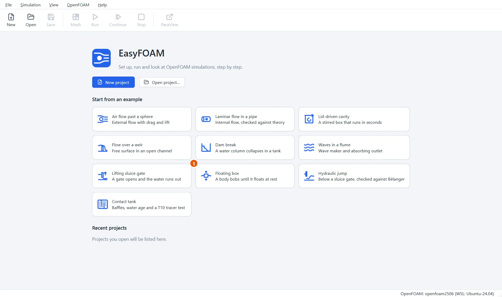
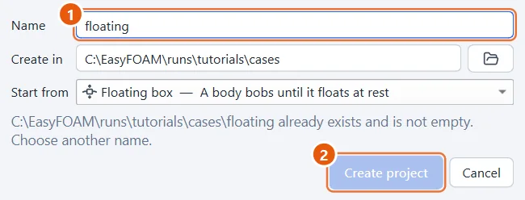
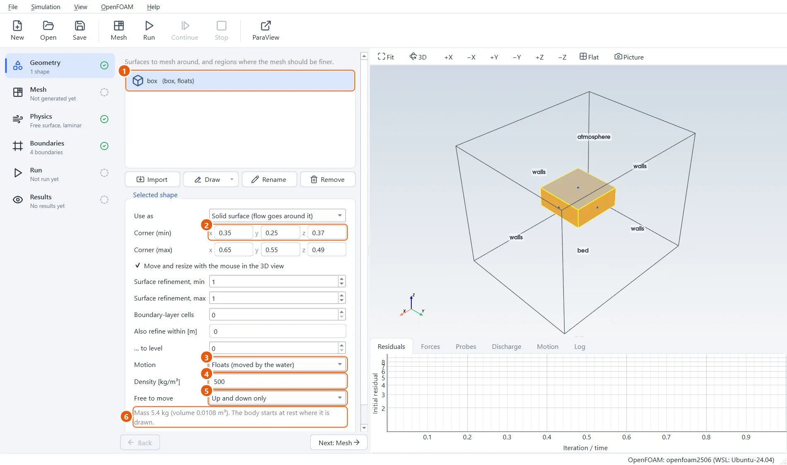
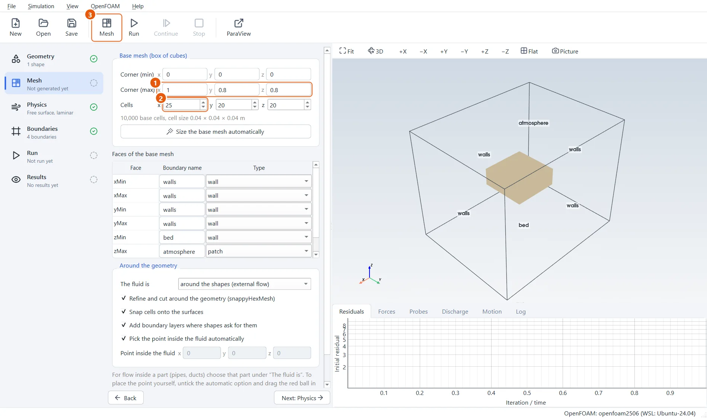
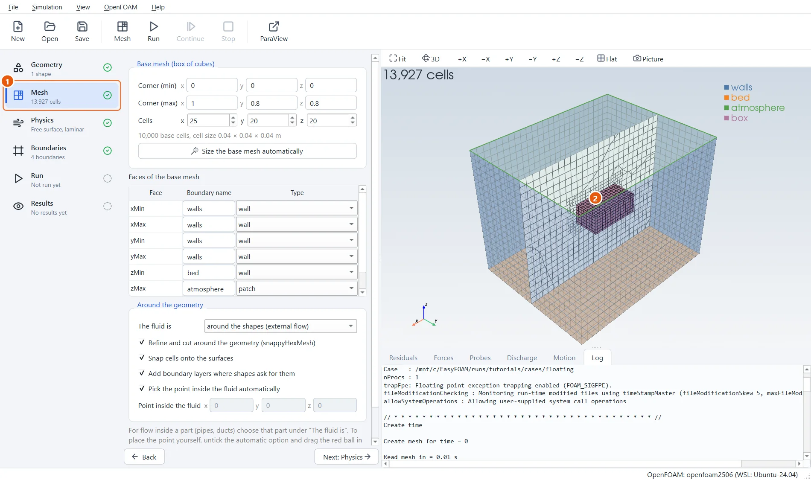
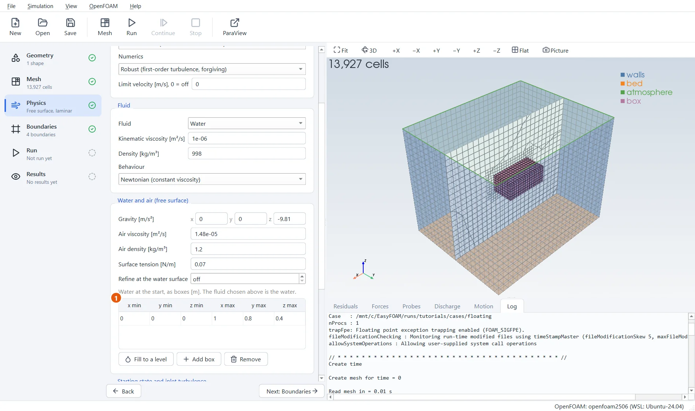
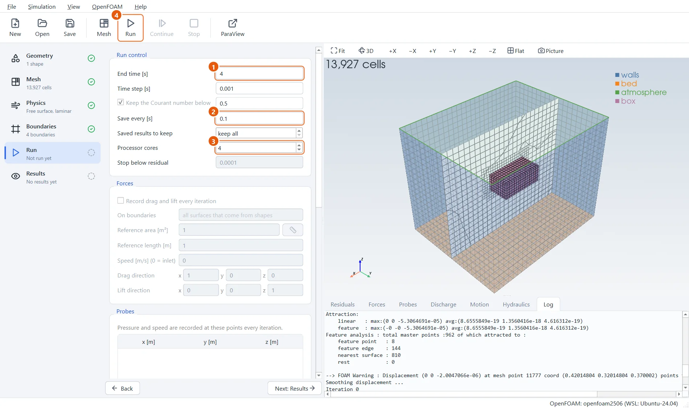
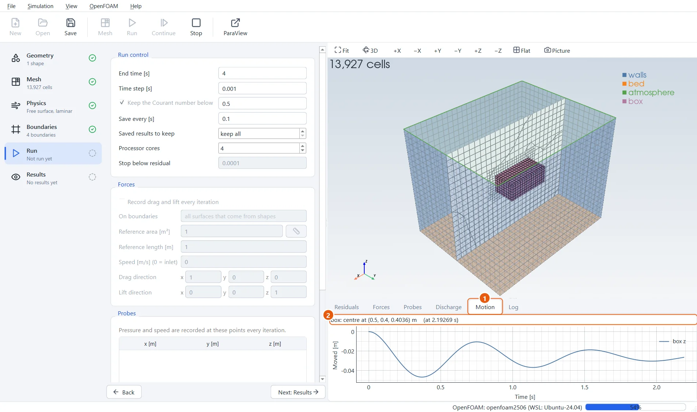
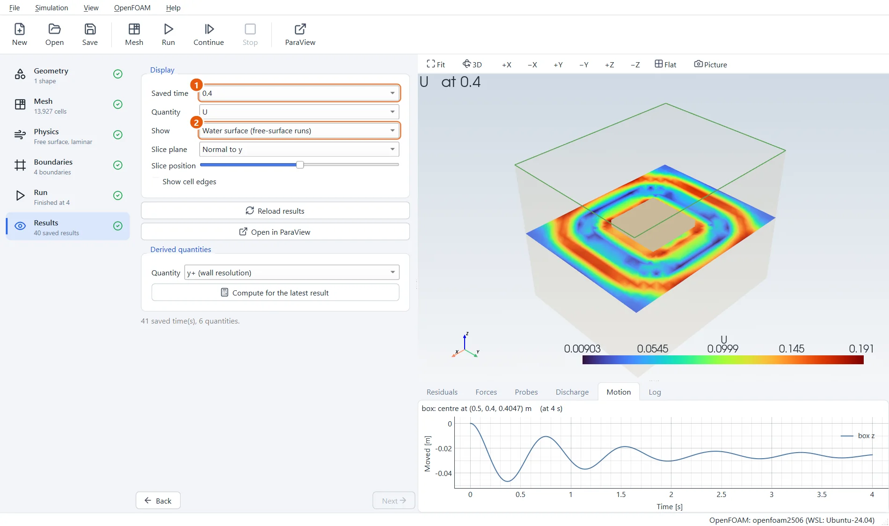
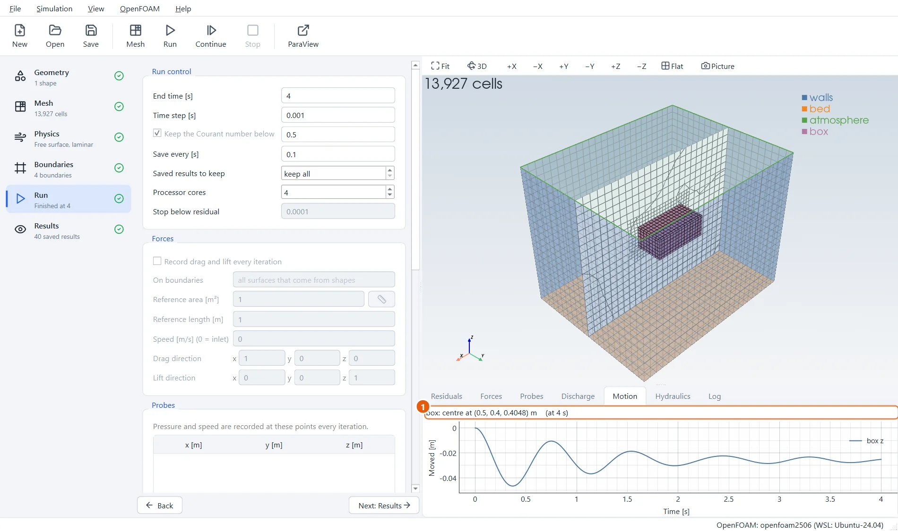

Tutorial 10 of 15
Floating box
A body that the water moves: a box is let go a little too high and bobs until it floats at rest.
A floating body is not moved by you but by the water and its own weight. EasyFOAM works out the body's mass from its shape and the density you give, and the solver then moves it in step with the flow. This is often called a 6DoF simulation, for the six ways a rigid body can move.
The body here is a flat box, 0.3 × 0.3 × 0.12 m, half as dense as water. It is drawn 3 cm higher than where it will float, so when the run starts it drops, overshoots, and bobs with ever smaller swings. Where it ends up can be checked with Archimedes' principle.
What you will learn
- make a shape float: density and freedom of movement
- choose a mesh that suits a floating body
- follow the body's position while the run goes on
- check the floating depth by hand
Computer time: about a minute for the mesh and one to two minutes for the run, on four cores.
1Open the example
Start EasyFOAM. This case is one of the examples on the start page: it comes with every setting filled in, and this tutorial walks through each of them so that you understand the case and could build it yourself.
- Click Floating box.


2Name the project
The project is an ordinary folder that EasyFOAM creates for you.
- Type a name, for example
floating. - Click Create project.


3The box floats
The box is an ordinary shape with Motion set to Floats. Two things describe it:
- its density. Below the density of water (about 1000 kg/m³) a body floats, above it sinks;
- how it is free to move. Up and down only is the quickest and steadiest choice and enough to find how deep a body floats. The other choices let it slide and pitch, or move in all six ways.
EasyFOAM shows the mass it has worked out, so a wrong size or density is noticed at once.
- The shape box. The list notes that it floats.
- It reaches from z =
0.37to0.49: 0.12 m high, with its middle at 0.43 m. - Motion: Floats (moved by the water).
- Density:
500kg/m³. - Free to move: Up and down only.
- The mass: 5.4 kg.


4A mesh that suits the water level
The tank is 1 m × 0.8 m and 0.8 m high. The cell size is chosen with care: 4 cm cells put a boundary between two layers of cells exactly at 0.40 m, where the water surface will be. Water is placed in whole cells, so with any other cell size the starting level would be rounded to the nearest layer and the body would float a little higher or lower than you expect.
- Corner (max):
1,0.8,0.8. - Cells:
25,20,20, which makes 4 cm cubes. - Click Mesh in the toolbar (or press F5).


5The mesh around the box
The box is cut out of the mesh, with finer cells around it. During the run the cells close to the box move with it and the cells further away stay where they are; the ones in between stretch.
- The number of cells, about 14,000.
- The box hangs in the middle of the tank.


6Fill the tank
A floating body needs the free-surface flow type, Free surface: water and air, which is already chosen at the top of the Physics step. Scroll down to Water and air: the water fills the tank to 0.4 m.
- One box of water, as wide as the tank and
0.4m deep.


7Run for four seconds
Four seconds are about five bobs of the box: enough to see where it settles.
- End time:
4s. - Save every:
0.1s. - Processor cores:
4. - Click Run in the toolbar (or press F6).


8Watch it bob
Open the Motion tab. The curve shows how far the middle of the box has moved from where it was drawn. It drops, comes back up, and swings a little less each time, about once every 0.8 seconds.
- Open the Motion tab.
- The position of the middle of the box right now.


9The water around the box
The Results step shows the water surface coloured by speed. At 0.4 s the box is at the bottom of its first plunge and has pushed a ring of water outwards. Step through the times to see the rings spread and return from the tank walls.
- Saved time:
0.4. - Show: Water surface.


10Check it with Archimedes
A floating body pushes aside its own weight of water. The box weighs 5.4 kg, so it must push aside 5.4 litres. With a base of 0.3 × 0.3 m that takes a depth of 0.06 m: half the box is under water and its middle is at the water surface.
The surface itself rises a little, because the box now takes up more room in the water than at the start: from 0.400 m to 0.4034 m. So the middle of the box should come to rest at 0.4034 m.
Open the Motion tab once more and read the position at the end of the run: the last small swings are around 0.404 m, within a millimetre of the hand calculation.
- The middle of the box at the end of the run: z within a millimetre or two of 0.404 m.


11Try it yourself
- Set the density to
800. The box should now float with four fifths of its height under water. - Choose Free to move: All six directions. The flat box stays upright. A tall, narrow box would topple over, which a stretching mesh cannot follow; see the limits in the sluice-gate tutorial.
- Make waves under it: turn one tank wall into an opening in the Mesh step and make it a Wave maker in the Boundaries step.